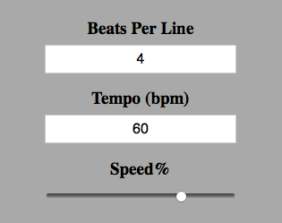
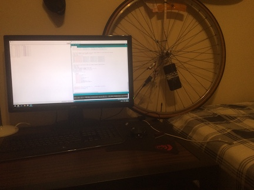
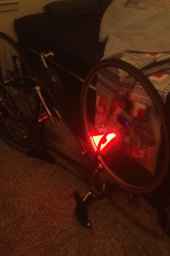
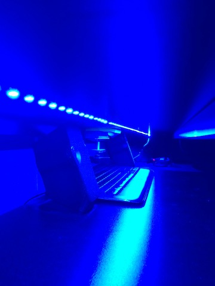
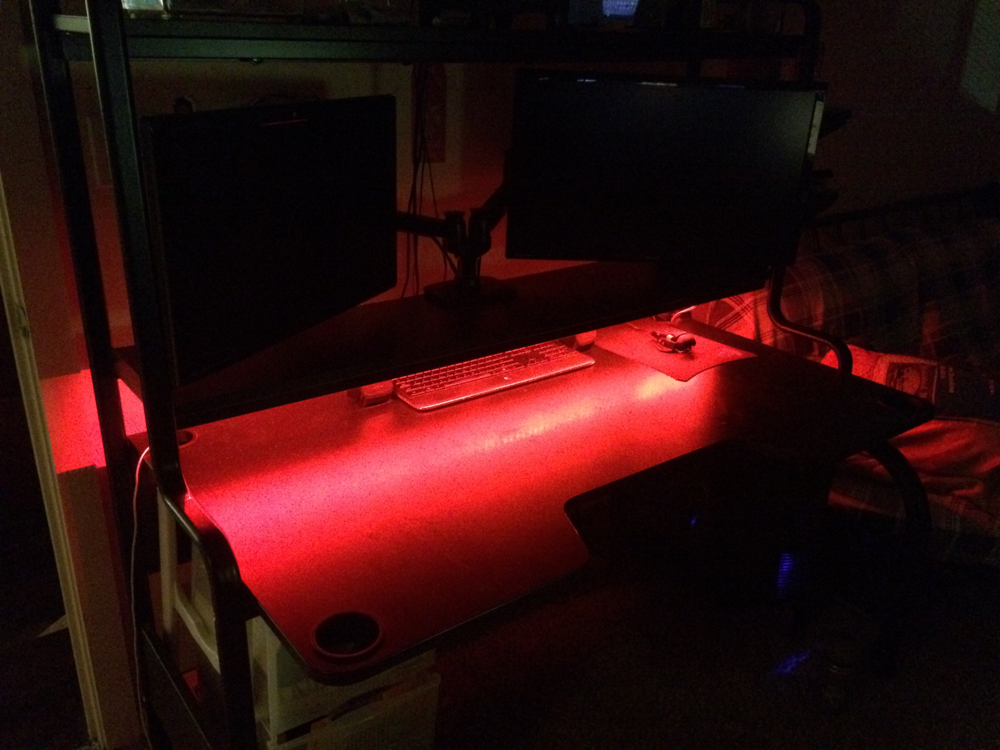
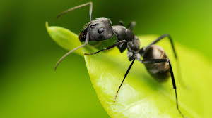

Dabblings
-

Lyric Scroller
Hands-free solution for reading large blocks of text on small screens.
×A hands-free solution for reading large blocks of text on small screens. Uses CSS, HTML, javascript and just a wee bit of JQuery.
View code Check it out -

LED Bike Display
Device that produces images on a bike wheel using rotating LEDs.
×This project uses Matlab, an Arduino, and some individually addressable RGB LEDs (WS2812B) mounted to a bike wheel. Matlab is used to convert various images to arrays of color-averaged radial and transverse components, which are then manually loaded onto an arduino. The RPMs are calculated using a magnetic switch on the wheel. The position of the LED strip is approximated using this tempo, and the corresponding color for each LED is then selected from the array.
View code  -

IOT Desk Lights
Control my desk lights anytime, anywhere - with internet.
×This project uses PHP, Javascript, HTML, and an Arduino. HTML/JS is used for the user interface, and PHP is used to read and write color values to a server-side .txt file. A program running on my computer polls this .txt file, sends the value to an arduino via USB serial connection, which then controls the led strip through a digital I/O pin using the Adafruit NeoPixel library.
View code Check it out  -

Ants
Ants are friends, not food.
×Some text in the project4 Modal..
-

Wormhole
Let's take a dive into the deep beyond...
×Some text in the project5 Modal..
-

DotA 2
Not the same as Dochapon kingdom
×Some text in the project6 Modal..